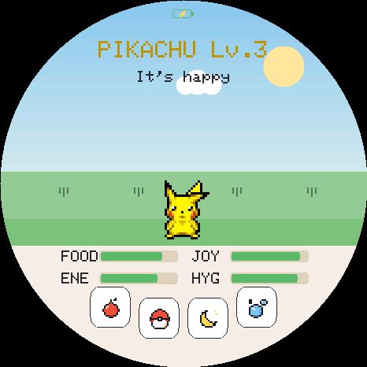
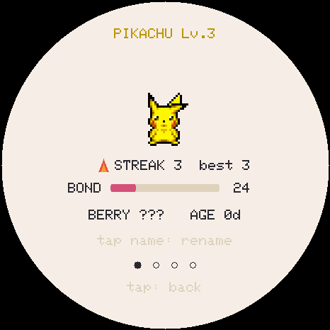

刷入 TamaPoke 韌體
- 接上 USB，勾選下面兩項確認。
- 按「刷入遊戲」，選擇
USB JTAG/serial debug unit。 - 在刷機視窗選
Install，等到完成後關閉視窗。
正在準備韌體檔案…
一塊開發板，一位口袋夥伴
插上 USB，在瀏覽器刷入遊戲。
餵食、陪玩、洗澡，再看牠慢慢成長。
適用微雪 Waveshare 開發板ESP32-S3-Touch-AMOLED-1.75
不需要 Arduino IDE 或程式經驗 · 皮卡丘動畫不用 microSD

先認對你的開發板
原版 1.75 吋圓形 AMOLED 觸控開發板，16 MB Flash、8 MB OPI PSRAM。要核對完整型號，只有「ESP32-S3」字樣還不夠。
1.75C 是不同板型，請勿使用本頁韌體。
查看微雪官方板型資料第一次也能跟著做
核對上面的完整型號。電池、喇叭與 microSD 都不是玩皮卡丘的必要條件。
用 USB 將開發板接到電腦。只有充電功能的線，瀏覽器不會找到裝置。
開啟這個網頁即可。手機可以看教學，刷機請在電腦上操作。
用 USB 帶牠回家
全新安裝會重設板上原有的程式與遊戲進度。先選擇需要的素材，再依序操作。
已經在玩本版遊戲？直接載入記憶卡素材，不用重刷或清除進度。
USB JTAG/serial debug unit。Install，等到完成後關閉視窗。正在準備韌體檔案…

看到御三家選角畫面也沒關係，
這一步會直接幫你設定皮卡丘。
完成刷入後，按這裡啟用角色。
如果裝置有電池，現在就能拔除 USB；沒有電池時保持 USB 供電。接著看下面的日常照顧方式。
開始認識遊戲兩種模式使用相同的遊戲韌體。完整模式會另外透過 USB，把 151 隻的一般／異色動畫與圖鑑縮圖傳入 microSD，共 303 個檔案。預留約 10–15 分鐘，實際依電腦與卡片而異。
已有本版皮卡丘？不用再刷韌體，可直接完成這一步，保留目前角色與進度。
先備份卡片內容。目前韌體在卡片無法掛載時可能自動格式化；請使用可清空的卡片，FAT32、至少約 64 MB 可用空間。先關機、插卡，再接上 USB；請勿在傳輸中拔卡。
準備中
尚未開始。沒有讀到記憶卡時，網頁會停止，不會改寫角色或存檔。
傳輸中請保持 USB 供電、電腦不要休眠。停止會先完成目前檔案；中斷後重新載入會再傳全部檔案。素材包有 SHA-256 校驗，完成後另核對卡內檔名與大小。查看記憶卡教學與驗證範圍。
先學會這四個按鈕
按鈕在螢幕下方，由左到右排列。想摸摸皮卡丘，輕點角色後放開就好。
點食物，再選樹果。皮卡丘喜歡藍樹果；糖果偶爾吃就好。
點精靈球開始小遊戲，點球讓它留在空中。三次落地後結算。
點燈泡入睡、再點喚醒。出現 Zz 才是睡著，關螢幕不算。
點最右邊按鈕，等三秒泡泡動畫結束，清潔就會恢復。
FOOD飽足：餵樹果
JOY心情：摸摸與陪玩
ENE精力：按燈泡睡覺
HYG清潔：按洗澡
夜間背景不代表已經睡著。清醒時需求會持續下降，長時間休息前記得先讓角色睡覺。
每一頁，知道怎麼進也知道怎麼回
點圖片或「看操作方式」，就能查看這一頁的用法。
圖片由 同版遊戲原始繪圖程式 在電腦渲染，使用示例數值；不是開發板實拍。裝置預設英文，中文說明放在圖旁。
22 個介面示例
遇到問題，先看這裡
先換一條確定可以傳資料的 USB 線，直接接電腦，避免先經過集線器。確認開發板有供電。仍沒有裝置時，可依微雪官方板卡文件進入 BOOT 下載模式，再回來重試。
同一個 USB 連接埠一次只能由一個程式使用。關閉刷機彈窗、其他網頁的序列埠連線、Arduino 序列監控等程式，再按「連接並啟用皮卡丘」。若裝置剛重開，等三秒再試。
保留 USB 連接，完成上面的第二步「連接並啟用皮卡丘」。它會直接設定 #25 並存檔，不需要自己輸入任何指令。
可以玩皮卡丘。本版內建 #25 皮卡丘與 #26 雷丘的一般／異色動畫，#1–9 另有簡單備用圖。選「完整 151 隻素材」可多做記憶卡載入步驟，把完整動畫與圖鑑縮圖透過 USB 傳入 microSD；不用更換韌體，也不會直接解鎖全部圖鑑紀錄。
AMOLED 閒置後會自動降低亮度，先點一下喚醒。短按 PWR 也可切換螢幕。若確實全黑且無回應，檢查供電、完整板型及刷機是否完成，再依官方板卡說明重新啟動。
開發板沒有裝電池時，需要 USB 持續供電。只有接妥相容電池時，才可以拔掉 USB 繼續玩。
教學與刷機頁是繁體中文。裝置遊戲本身目前提供英、西、法、德、義、葡、日、韓八種語言，預設英文，沒有中文選項。
網頁啟用時會同步電腦的當地時間。也可以主畫面向下滑，調整小時和分鐘，再按 OK。想讓角色睡覺仍要按燈泡；夜景與睡眠是兩件事。
這款原版 1.75 板短按是切換螢幕，長按約四秒是關機。1.75C 的三連按鎖屏等操作不適用這一版。
2026-11-23 已用 macOS Chrome 與微雪原版 1.75 板，從此公開網頁完成全新刷機、啟用 Lv.1 皮卡丘；無 microSD，硬體重開機後角色仍保存且動畫載入成功，板上韌體雜湊也符合保存版本；使用者另確認皮卡丘畫面與觸控都正常。查看實測紀錄與操作截圖。Windows、Edge、電池斷電續玩與完整 SD 素材未在這輪實測。遊戲圖是程式渲染示例。